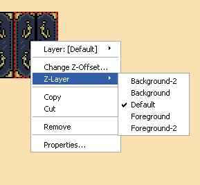
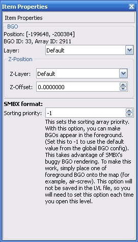
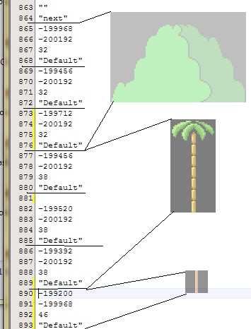
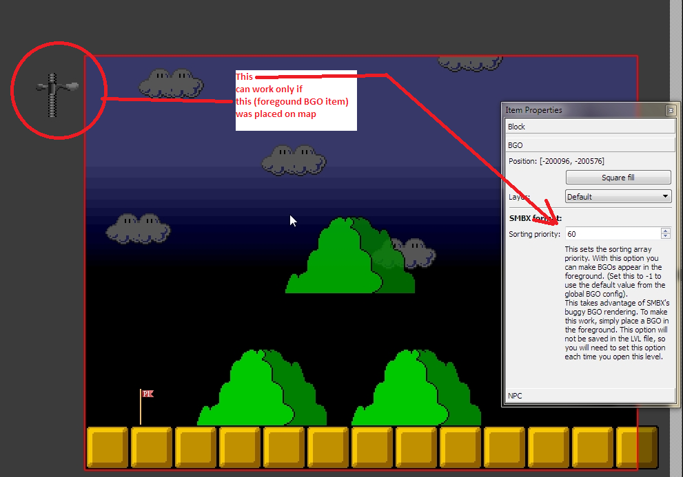

Background objects. - is a sceneries. But some BGO can have special features: platform movement paths, will define movement paths for moting "platforms", reverser, what will revert platform's speed back. Some BGO allows to clibmb on them. BGO can be background and foreground. Foreground BGO placing over all other level items.
Placing of BGO

BGO Context menu

Each BGO now have only two options:
Layer - here defined the layer, what is owner of this BGO. All items at first are a members of "Default" layer.
Z-Layer - defining the displaying priority: over or under other items. (Avaialbe only for LVLX format)
Z-Offset - Is a helpful value which allow to order BGO's which displaying over/under each other. (Avaialbe only for LVLX format)
Sorting priority - The special option using only for SMBX LVL file format saving process, but not save into them.
This option can be used only as hack of SMBX to force display background BGO as foreground. This option don't defining Z-value, which a real foreground/background position index. This option defining the sequence of array items for BGO in file.
BGO Properties toolbox

This working ONLY if you saving into SMBX file format. And will not saving in them. Aftter reopen same file you need to define this value again.
All data, include BGOs, in files written in defined sequance:

When we using the sort priority value, we will tell to BGO's place in the begin, middle or in the end of array:

SMBX renger algorythm displaying BGOs by it's array order. On first BGO, which marked as "Foreground", will made all next BGOs foreground too, even if haven't "foreground" marker. Knowing this feature, is possible to force display background BGOs as foreground.
This working only from SMBX and only in fullscreen mode.
For it can work, you must place on the map the one of BGO with "Foreground" mark (what already displaying as foreground) in the any place.

Don't forget, if you saving into SMBX LVL file format, in next time you must redefine the sorting priority value, because in not saving in SMBX file format.
Copyright © 2014-2015 Platformer Game Engine by Wohlstand project. All rights reserved.